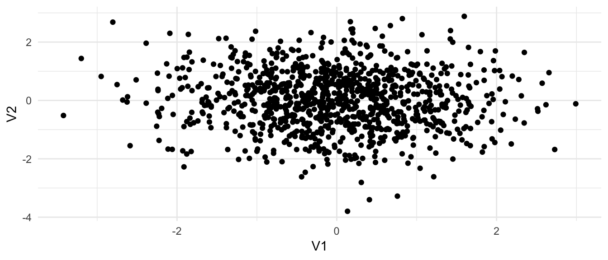

3 R extensions
The following section treats how you can interface R with other languages, e.g. C++, Fortran or Python. The first two I use primarily for speeding up numerical code, although using Fortran become somewhat obsolete. I use Python mostly for interfacing machine learning libraries, such as tensorflow, keras or GPFlow.
3.1 C++ and Rcpp
Using Rcpp (and RcppEigen, RcppArmadillo, Boost) you can easily extend your code to C++. It not only nicely wraps the standard C API, but also let’s you use standard matrix libraries such as Eigen and Armadillo or Boost.
If you have a project that’s not a package you can for instance create a function like this:
Rcpp::cppFunction("double sum(std::vector<double>& vec) {
double sum = .0;
for (std::vector<double>::size_type i = 0; i < vec.size(); ++i)
sum += vec[i];
return sum;
}")
sum(as.numeric(seq(10)))[1] 55Let’s have a look at an Eigen example with sourceCpp:
cat ./_src/square.cpp// [[Rcpp::depends(RcppEigen)]]
#include <RcppEigen.h>
// [[Rcpp::export]]
Eigen::MatrixXd square(Eigen::MatrixXd& m)
{
return m.transpose() * m;
}library("RcppEigen")
Rcpp::sourceCpp("./_src/square.cpp")
square(matrix(rnorm(10), 2)) [,1] [,2] [,3] [,4] [,5]
[1,] 5.8796994 2.4710347 3.587033 2.7327981 0.1372097
[2,] 2.4710347 2.6095616 2.611945 0.8948609 2.0985710
[3,] 3.5870330 2.6119446 2.964747 1.4888955 1.5184331
[4,] 2.7327981 0.8948609 1.488895 1.3111131 -0.2657189
[5,] 0.1372097 2.0985710 1.518433 -0.2657189 2.6544504Even for small matrices, the speed up is already substantial.
m <- matrix(rnorm(100 * 100), 100)
microbenchmark::microbenchmark(square(m), t(m) %*% m)Unit: microseconds
expr min lq mean median uq max neval
square(m) 282.920 299.0500 389.1880 301.6985 320.4470 1509.044 100
t(m) %*% m 85.628 89.6305 352.7502 120.0165 204.7815 4789.519 1003.1.1 Rcpp in a package
Usually, you would want to put your source code into a cpp file in the src folder. Then you can call C++ from an R function, for instance as described below.
- Define a C++ source file and put it in
src, like this:
#include <Rcpp.h>
// [[Rcpp::export]]
Rcpp::List dostuff()
{
// some computations
return Rcpp::List::create(
Rcpp::Named("a") = ...
);
}- Add this to your
DESCRIPTION:
Imports: Rcpp
LinkingTo: RcppAdd a comment
#' @useDynLib pkg, .registration = TRUEto the documentation of any function, better yet to the package doc.Call
devtools::document()Call
Rcpp::compileAttributes("./pkg")
This should let you access the C++ function from your package. For more details check out the main documentation or some of my packages, like netReg or datastructures. The latter also has an example how to use modules and Boost.
3.1.2 Writing C++
Here are some tools that help you develop your code:
- gdb and lldb for debugging,
- valgrind and gprof to check for memory leaks and for profiling,
- Intel’s Parallel Studio XE (<3) which is a toolbox for vectorization, debugging, memory checks, etc. If you can get hold of it, get it. It is magnificent.
- Boost for unit tests, data structures and basically everything you ever need,
- cppcheck for static code analysis,
- doxygen for code documentation.
Many C++ libraries, like Dlib, Eigen or tensorflow have an R interface, so before implementing functionality yourself check out if there is already an implementation for it.
At this point it also makes sense to have a look at various C++ books such as
- Scott Meyers: Effective Modern C++,
- Scott Meyers: Effective C++,
- Ben Klemens: 21. century C,
- Kurt Guntheroth: Optimized C++,
- Nicolai Josuttis: C++17 - the complete guide,
- David Vandevoorde: C++ Templates - the compete guide.
For fast numerical code OpenMP and advanced vector and streaming SIMD extensions (AVX/SSE) is often the way to go. Writing good code using AVX is however not very simple and knowledge of memory alignment is required. However, starting from version 4 (?), OpenMP easily allows vectorization using #pragma simd.
Note: the last lines in this section are heavily subjective and only state the author’s opinion. More and more garbage code is forced onto the scientific community, mostly related to academic hubris and lack of knowledge about how to program* (we don’t mean how to accomplish a task using a programming language, but to embrace a language and its philosophy at its very core). If you aim to publish your code, make sure it follows contemporary good practices, standards and guidelines and that it is consistent, for instance by following people’s code who are part of the community for ages. At this point we want to emphasize that the author doesn’t claim to know C++, but rather that he is annoyed by this very trend.*
C++ is a large, complex language. Chances that you mess up, introduce bugs and memory leaks are high, unless you have some experience. In academia in mostly results in bad, un-maintainable code. If your argument is but it is faster than R, at least have a look at Fortran, Julia or Python (and numpy). If you still prefer hacking in C++ try to stick to some guidelines:
- don’t include C headers in your C++ projects .. just don’t. C and C++ are two languages. There is for need for
FILE*ormalloc. - modern C++ rarely needs pointers. Use
std::vectororstd::unique_ptr. No need to manually release pointers is an advantage of itself. - BOOST has (probably) everything you will ever need. Don’t reinvent the wheel and learn to include libraries in your project.
- Learn how to use Cmake, Meson or autotools. You should never need to directly invoke a compiler or write a hard-coded Makefile.
- Only because you have a PhD or M. Sc. in CS does not make you a prolific programmer. It requires staying up to date, reading other people’s code and embracing of new ideas and the very philosophy of the language and its community.
- Print warnings. They are usually there for a reason.
- Start a toy project or contribute to OSS projects.
3.2 Fortran
If you don’t want to include extra libraries like RcppArmadillo to keep your package small, you can either use the native C API, or, if you want to make use of BLAS and LAPACK, the Fortran API. Fortran has similar memory management as C, but is overall a far easier language to write numerical code with. I recommend this manual for more details.
TODO: some examples like above?
3.3 Reticulate
If you need to include Python code for analyses and then do, for instance, the plotting and reporting in R, check out reticulate.
library(reticulate)For instance we can create random numbers in Python:
import numpy
mean = [0, 0]
cov = [[1, 0], [0, 1]]
x = numpy.random.multivariate_normal(mean, cov, 1000)And then plot stuff in R:
library(ggplot2)
ggplot(as.data.frame(py$x)) + geom_point(aes(V1, V2)) + theme_minimal()